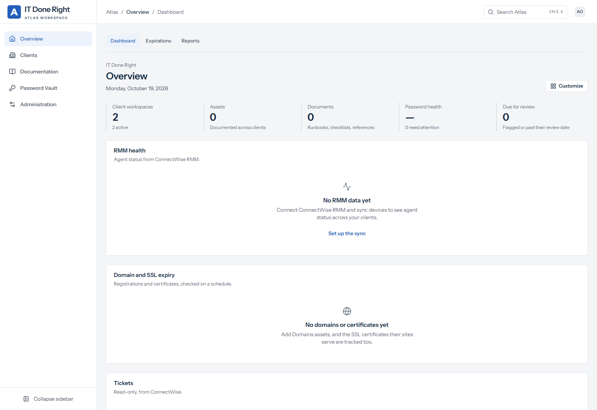
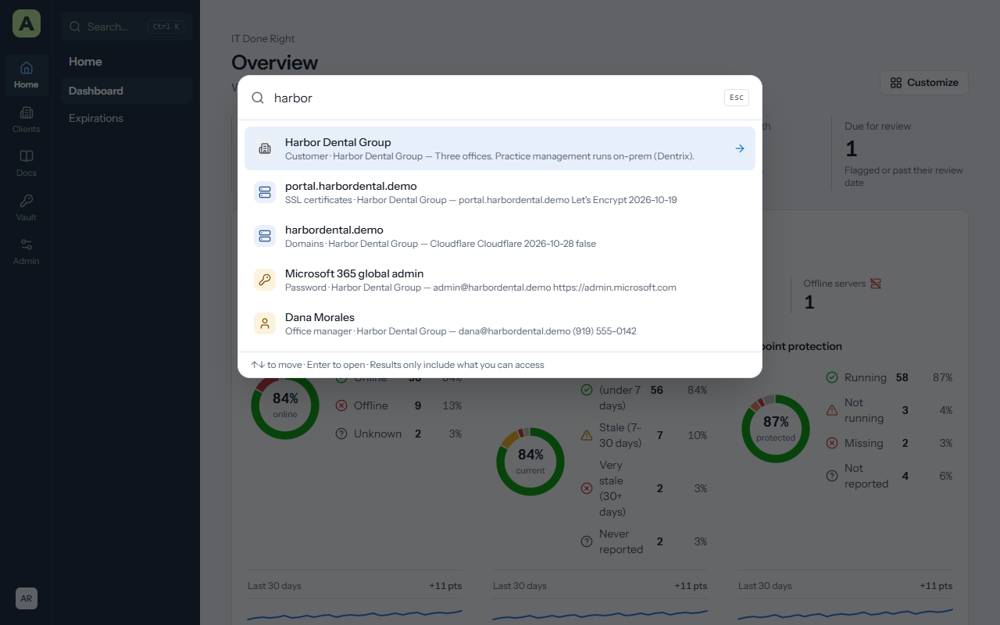
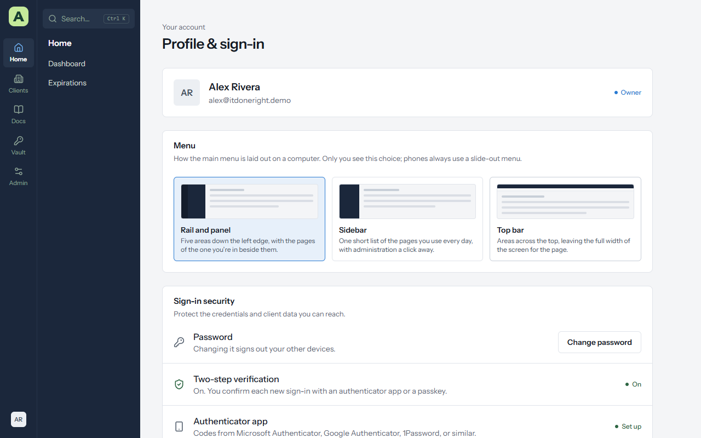
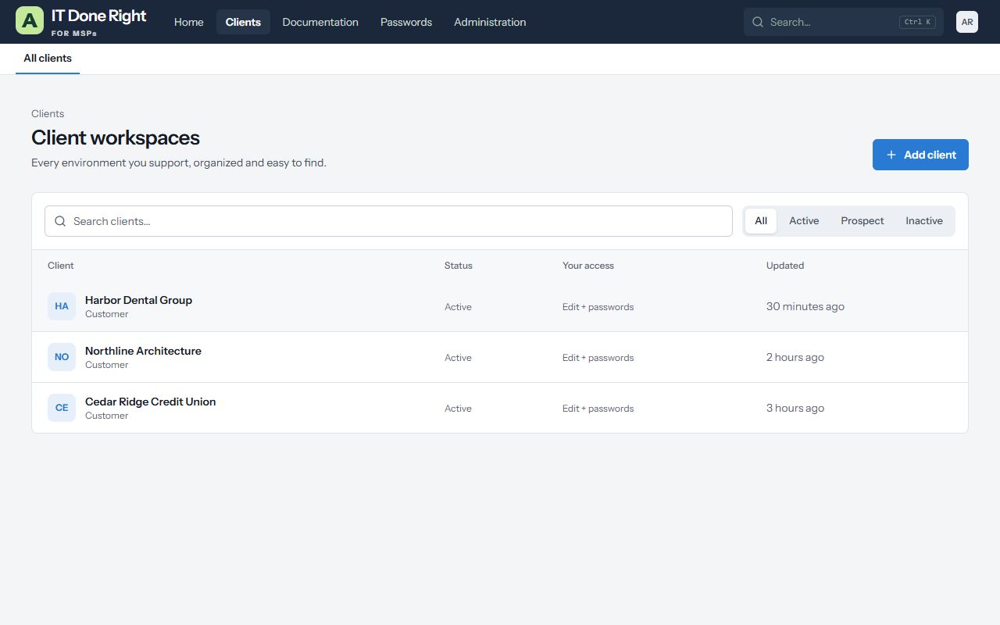

Chapter 2
Getting started
This chapter takes you from the email with your temporary password to knowing your way around. It takes about ten minutes.
Sign in for the first time
Your administrator gives you the Atlas address, your email, and a temporary password.
- Open the Atlas address in your browser and sign in with your email and the temporary password.
- Choose your own password. It must be at least 12 characters; a few unrelated words work well.
- Set up two-step verification. Staff can't do anything else until it's on. Scan the QR code with an authenticator app (Microsoft Authenticator, Google Authenticator, 1Password and so on) and enter the six-digit code, or add a passkey instead.
- Save your recovery codes. They are shown once. Each one gets you in once if you lose your phone. Keep them somewhere other than Atlas.
Passkeys
A passkey is Windows Hello, Touch ID, your phone, or a security key. Add one under Profile & sign-in → Passkeys (open the account menu with your initials at the bottom of the menu). After that, Sign in with a passkey on the sign-in page signs you in without typing a password, and can't be phished.
Signing in with Microsoft or your identity provider
If your company has set it up, the sign-in page shows Sign in with Microsoft or Sign in with your provider's name. Your account must already exist in Atlas. The first time you use it, an administrator confirms that the Microsoft or provider account is really yours, and until they do, Atlas asks you to wait.
Forgot your password
Choose Forgot your password? on the sign-in page. The link in the email works once, for an hour. If you have also lost your phone and recovery codes, an administrator can reset your sign-in.
Find your way around


Atlas is organized into five areas. Each area has a handful of pages.
| Area | Pages | Who sees it |
|---|---|---|
| Home | Dashboard, Expirations | Everyone |
| Clients | All clients, and a shortcut to each client | Everyone |
| Docs | Assets, Knowledge base, Checklists | Everyone; the knowledge base and checklists are for staff |
| Vault | Passwords, My vault, Password health, Send; Password rotation and BitLocker collector for administrators | Staff |
| Admin | People and security, data, system, and settings pages | Administrators |
Your account menu, with your initials, is at the bottom of the menu (or at the right of the top bar). It has Profile & sign-in, light and dark appearance, and Sign out.
Search everything with Ctrl+K


Press Ctrl+K (or ⌘K on a Mac) anywhere in Atlas, or click Search in the menu. Type a client, an asset name, an IP address, a serial number, a contact, or words from a document. Use the arrow keys and Enter to open a result, or Esc to close. Results only include what you have access to.
Choose a menu style
Atlas has three menu layouts. Everyone picks their own under Profile & sign-in → Menu, and it follows you to any computer. On a phone the menu always slides out from the side.


| Style | What it looks like | Good for |
|---|---|---|
| Rail and panel (the default) | Five area icons down the left edge, with the pages of the area you're in beside them. | Getting around quickly once you know where things are. |
| Sidebar | One list of the pages you use every day, plus your starred clients. Administration opens its own list, with Back to Atlas at the top. | People who mostly work in a few pages. |
| Top bar | The areas across the top, and the pages of the current area in a second row beneath. | Wide tables and long pages, because the page gets the full width of the screen. |


Favourites and the dashboard
Click the star beside a client, asset or document to add it to the Favorites card on your dashboard. In the rail and sidebar styles, starred clients also appear in the menu.
Choose Customize on the dashboard to show, hide and reorder its cards. Your layout is yours alone. Reset to default puts the standard layout back.
Light and dark
Choose the appearance in the account menu. Atlas remembers it per browser.
What you can do depends on your role
Everyone in Atlas has one role, plus an access level for each client.
| Role | Who it's for | Clients | Administration |
|---|---|---|---|
| Owner | The person responsible for Atlas | Every client, including passwords | Everything, including other owners and vault policies |
| Admin | Service managers, senior technicians | Every client, including passwords | People, settings, imports, system |
| Technician | Your technicians | The clients they're given, up to editing passwords | None |
| Read-only technician | Trainees, auditors | The clients they're given, read-only | None |
| Client editor | A client's own staff who keep their documentation | Their own organization, can edit | None |
| Client viewer | A client's own staff | Their own organization, read-only | None |
For each client, a person's access is one of No access, Read, Edit, or Edit + passwords. Only Edit + passwords shows the client's vault. Your access to a client is shown under its name.
Look after your own account
Profile & sign-in is where you manage your own security:
- Change password. Changing it signs out your other devices.
- Two-step verification, Authenticator app, Passkeys and Recovery codes. Add a second method so losing your phone doesn't lock you out.
- Where you're signed in. Every browser session, with Sign out for each one you don't recognize.
- Remembered browsers. Forget any browser that no longer needs to skip the code.
- Signed-in apps and Desktop apps. The browser extension and Atlas for Windows, with Sign out for each.
- Email notifications. Tick Email me about expirations for alerts when certificates, domains, licences, warranties, password rotations and document reviews come due, plus a Monday digest.

Keyboard and accessibility
- Tab from the top of any page reaches Skip to content first.
- Ctrl+K opens search anywhere. Esc closes dialogs and menus, and focus returns to where you were.
- Every screen is tested against WCAG 2.2 AA in light and dark, and at phone width.